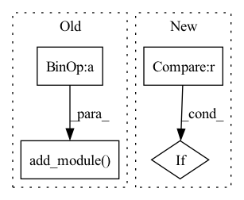

Pattern ID :170
Before Change
self.layers = nn.Sequential()
for index, output_size in enumerate(output_sizes):
// self.layers.add_module("linear_%d" % index, LazyLinear(output_size))
self.layers.add_module( "linear_%d" % index, nn.LazyLinear(output_size))
// self.layers.add_module("relu", nn.ReLU6())
def forward(self, input):
input = input.to(device)After Change
for index, output_size in enumerate(output_sizes):
self._layers_ordered_dict["linear_" + str(index)] = nn.LazyLinear(output_size)
// self.layers.add_module("linear_%d" % index, LazyLinear(output_size))
if index < (num_layers - 1) :
self._layers_ordered_dict["relu_" + str(index)] = nn.ReLU()
self.layers = nn.Sequential(self._layers_ordered_dict)
def forward(self, input):In pattern: SUPERPATTERN
Frequency: 3
Non-data size: 4
Instances Fragment ID: 751075
Project Name: wwmark/meshgraphnets
Commit Name: 230815cb6b38dd30b8d25bec0083efb8358d68e2
Time: 2021-10-08
Author: ruoheng.ma@gmail.com
File Name: encode_process_decode_max_pooling.py
M Class Name: LazyMLP
N Class Name: LazyMLP
M Method Name: __init__(2)
N Method Name: __init__(2)
M Parent Class: nn.Module
N Parent Class: nn.Module
M File Name: encode_process_decode_max_pooling.py
N File Name: encode_process_decode_max_pooling.py
M Start Line: 36
M End Line: 42
N Start Line: 36
N End Line: 43
Before Change
self.layers = nn.Sequential()
for index, output_size in enumerate(output_sizes):
// self.layers.add_module("linear_%d" % index, LazyLinear(output_size))
self.layers.add_module( "linear_%d" % index, nn.LazyLinear(output_size))
// self.layers.add_module("relu", nn.ReLU6())
def forward(self, input):
input = input.to(device)After Change
for index, output_size in enumerate(output_sizes):
self._layers_ordered_dict["linear_" + str(index)] = nn.LazyLinear(output_size)
// self.layers.add_module("linear_%d" % index, LazyLinear(output_size))
if index < (num_layers - 1) :
self._layers_ordered_dict["relu_" + str(index)] = nn.ReLU()
self.layers = nn.Sequential(self._layers_ordered_dict)
def forward(self, input): Fragment ID: 751067
Project Name: wwmark/meshgraphnets
Commit Name: 9be9ef87016e6502ff5ef60a988866e0d7fc9ecb
Time: 2021-10-08
Author: ruoheng.ma@gmail.com
File Name: encode_process_decode.py
M Class Name: LazyMLP
N Class Name: LazyMLP
M Method Name: __init__(2)
N Method Name: __init__(2)
M Parent Class: nn.Module
N Parent Class: nn.Module
M File Name: encode_process_decode.py
N File Name: encode_process_decode.py
M Start Line: 36
M End Line: 42
N Start Line: 36
N End Line: 43
Before Change
// Objectness scores (2), center residual (3),
// heading class+residual (num_dir_bins*2),
// size class+residual(num_sizes*4)
conv_out_channel = (2 + 3 + self.num_dir_bins * 2 +
self.num_sizes * 4 + num_classes)
self.conv_pred.add_module( "conv_out",
nn.Conv1d(prev_channel, conv_out_channel, 1))
def init_weights(self):
Initialize weights of VoteHead.
passAfter Change
self.size_res_loss = build_loss(size_res_loss)
if size_class_loss is not None:
self.size_class_loss = build_loss(size_class_loss)
if semantic_loss is not None :
self.semantic_loss = build_loss(semantic_loss)
self.bbox_coder = build_bbox_coder(bbox_coder)
self.num_sizes = self.bbox_coder.num_sizes Fragment ID: 751073
Project Name: open-mmlab/mmdetection3d
Commit Name: 460f6b3bf2320ceddeba58054c122836af2e6872
Time: 2020-09-13
Author: zhoujiaming@sensetime.com
File Name: mmdet3d/models/dense_heads/vote_head.py
M Class Name: VoteHead
N Class Name: VoteHead
M Method Name: __init__(17)
N Method Name: __init__(17)
M Parent Class: nn.Module
N Parent Class: nn.Module
M File Name: mmdet3d/models/dense_heads/vote_head.py
N File Name: mmdet3d/models/dense_heads/vote_head.py
M Start Line: 68
M End Line: 105
N Start Line: 67
N End Line: 86